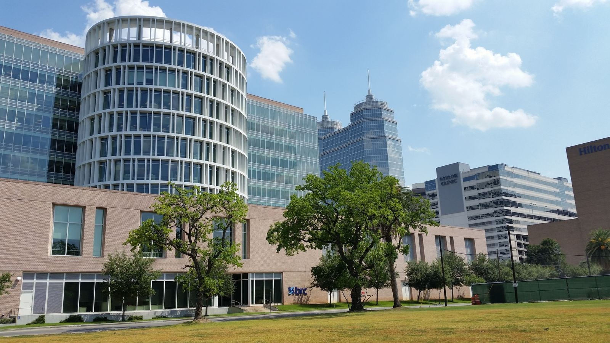

Graduate Students
Apply through Rice Bioengineering, Systems, Synthetic and Physical Biology (SSPB), Chemistry or Applied Physics PhD programs.
DAI LAB / OPPORTUNITIES
Join the crew to build next-generation molecular and genomic technologies together.

The Dai Lab is located in the BRC building, next to Rice University main campus, and across from several TMC institutions, including Baylor College of Medicine, and MD Anderson Cancer Center.
Apply through Rice Bioengineering, Systems, Synthetic and Physical Biology (SSPB), Chemistry or Applied Physics PhD programs.
Please send a cover letter and your CV to mingjie.dai@rice.edu.
Please inquire through email, including a cover letter and your CV, to mingjie.dai@rice.edu.